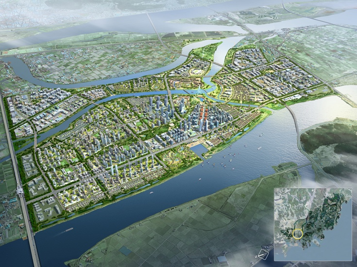

한중국의 전자기기
한국 전자기기 (반도체, 티비, 핸드폰)
반도체는 ‘80년대 이후 PC, 스마트폰 등에 핵심부품으로 투입되며 지속 성장해 왔고,
2022년 글로벌 반도체시장은 6,040억불을 기록하였다.
이 중 한국의 글로벌 반도체 시장점유율은 17.7%로 2013년 이후 10년간 세계 2위 자리를 지속하여 지키고 있다.

특히 전 세계 메모리 반도체 시장의 60.5%를 차지하였으며, DRAM 70.5%, NAND는 52.6%를 점유하고 있다.
2022년 국내 반도체 총 수출은 1,292억 달러이며, 이 중 메모리반도체가 738억 달러로서
전체 반도체 수출액의 57.46%를 차지한다.
또한 반도체는 한국 최대 수출품목으로서 2022년 기준 한국 전체 수출의 18.9% 비중을 차지하며 한국 경제와 산업을 선도하고 있다.

한국은 중국, 대만에 이어 3번째로 큰 반도체 제조시설을 갖추고 있으며, 세계 반도체 전체 Capa의 약 17.9%를 차지하고 있다.
이렇게 규모 있는 반도체 제조시설을 통해 한국은 현재 대만, 중국과 함께 세계에서 반도체 설비투자가 가장 활발한 나라로
거대한 반도체 장비/소재 시장을 형성하고 있다.

( 출처 : https://www.investkorea.org/ik-kr/cntnts/i-117/web.do )
신종 코로나바이러스 감염증(코로나19)에 따른 '집콕' 수요 증가로 국내 TV 시장이 2조7천억원 규모로 2019년에 비해 23% 성장했다.
글로벌 시장 정보 기업 GfK는 지난해 국내 TV 시장은 2019년과 비교해 23% 성장한 2조7천억원 규모였으며,
올 1분기에도 지난해와 비교해 21% 성장한 7천400억원의 규모를 기록했다고 밝혔다.

(출처 : https://zdnet.co.kr/view/?no=20210513111803 )
시장조사기관 옴디아에 따르면 지난해 출고가 2500달러(약 330만 원) 이상 TV의 글로벌 시장에서
삼성전자(60.5%)와 LG전자(19.1%)가 각각 1, 2위를 기록하며 한국의 매출 점유율은 79.6%까지 상승한 것으로 집계됐다.
OLED 시장에서도 처음으로 한국 TV 비중이 70%를 넘어섰다.
지난해 제조사별 OLED TV 글로벌 매출 점유율은 LG전자 48.0%, 삼성전자 22.7%로 나타났다.
다만 출하량 점유율은 중국 업체들의 물량 공세에 밀려 하락세를 이어가고 있다.
옴디아에 따르면 지난해 LG전자의 TV 출하량 점유율은 11.2%로 TCL(12.5%)과 하이센스(11.4%)보다 낮아 4위로 내려앉았다.

(출처 : https://munhwa.com/news/view.html?no=2024022201071807275002 )
2023년 국내 스마트폰 시장은 경제 불확실성 가중 및 전반적인 소비자 심리 지수의 회복과 하락 반복으로 인해
시장은 감소세를 이어갔지만 그 정도가 둔화되는 양상을 보였다.
가격대 별로는 800달러(USD)이상 (약 110만원)의 플래그십 제품군의 점유율이 14.1%p 크게 증가한 64.4%를 기록하였다.
주요 제조사의 플래그십 제품군 중심의 판매 전략 및 제품 가격 상승이 점유율 증가의 주 원인으로 분석됐다.
(출처 : https://www.idc.com/getdoc.jsp?containerId=prAP51990224 )
2024년 1분기 글로벌 스마트폰 시장은 전년 동기 대비 6% 성장하여 약 2억 9,690만대 출하량을 기록했다.
삼성은 애플을 제치고 글로벌 1위 스마트폰 기업 자리를 차지하였으며, 출하량 5,940만대로 점유율 20%를 기록하였고,
애플의 출하량은 전년 동기 대비 13% 감소하였으나 프로 모델 성능 향상으로 해당 브랜드의 ASP는 1분기 최고 기록을 경신.
전세계 아이폰 출하량은 약 5,060만대를 기록했다.
(출처 : https://korea.counterpointresearch.com/%EA%B8%80%EB%A1%9C%EB%B2%8C-%EC%8A%A4%EB%A7%88%ED%8A%B8%ED%8F%B0-%EC%A0%90%EC%9C%A0%EC%9C%A8-%EB%B6%84%EA%B8%B0%EB%B3%84-%EB%8D%B0%EC%9D%B4%ED%84%B0/ )
스마트 시티란 첨단 정보통신기술(ICT)을 이용해 도시 생활 속에서 유발되는
교통 문제, 환경 문제, 주거 문제, 시설 비효율 등을 해결하여
시민들이 편리하고 쾌적한 삶을 누릴 수 있도록 한 '똑똑한 도시'를 뜻한다.
스마트 시티는 도시 문제를 해소할 수 있을 뿐만 아니라 4차 산업혁명에 선제적으로 대응하고
새로운 성장 동력을 창출할 수있는 대안으로 떠오르면서, 세계 각국의 도시가 스마트 시티 구축에 나서고 있다.
스마트 시티가 구축되면 실시간으로 교통정보를 얻을 수 있어 이동 거리가 줄고,
원격 근무가 가능해지는 등 거주자들의 생활이 편리해질 뿐만 아니라 이산화탄소 배출량도 줄일 수 있다.

(출처 : https://terms.naver.com/entry.naver?docId=932742&cid=43667&categoryId=43667 )
한국은 세종과 부산에 스마트 시티 국가 시범도시를 조성한다
세종시 스마트시티 국가 시범도시인 세종시 5-1 생활권은 행복도시 미호천과 금강의 합수부에 위치한 자연환경이 수려한 지역으로,
행복도시 내 자족기능을 담당하는 4-2 생활권의 산학연 클러스터와 인접한 곳에 조성된다.

세종 5-1 생활권은 7대 혁신 요소인 모빌리티, 헬스케어, 교육과 일자리, 에너지와 환경,
거버넌스, 문화 및 쇼핑, 생활과 안전 구현에 최적화된 도시공간을 계획하고 개발을 추진한다.
세종시 국가시범도시는 도시의 계획부터 운영까지 시민과 함께 만드는 도시로,
시민의 다양한 참여기반을 조성하고, 효율적인 협업체계를 구성하여 시민이 체감할 수 있는 스마트 서비스를 제공한다.
에코델타시티(Eco - Delta - city)는 부산광역시 강서구에 조성예정인 대규모 친환경 수변 신도시이다.[1]
시행자는 K-water(80%), 부산도시공사(20%)고 주거시설, 업무시설 등 기타시설이 들어설 예정이다.
국가하천 주변지를 체계적이고 계획적인 개발을 통해 하천중심의 미래 지향적인 수변도시를 조성하고
부산신항만, 김해국제공항, 신항 배후철도, 남해고속도로 등 우수한 광역 교통체계와
지정학적 위치를 활용한 거점지역 육성으로 부산권 경제 활성화 및 미래 신성장 동력 구축 할 예정이다.

( 출처1 : https://www.busan.go.kr/ecodelta ) ( 출처2 : https://www.kwater.or.kr/website/ecodeltacity/sub01_01.do )